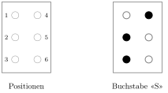

Aufgabe 1.6
In der Blindenschrift bestehen Buchstaben und Zeichen aus Punkten, die an sechs möglichen Stellen in dickeres Papier geprägt sind und somit ertastet werden können. Wie viele
verschiedene Symbole kann man auf diese Weise erzeugen?
- Jede der 6 Stellen kann zwei Zustände haben: geprägt oder nicht geprägt
- Denken Sie an ein 6-Tupel aus den Elementen {0, 1}
- Alternative: Wie viele Möglichkeiten gibt es, aus 6 Stellen 0, 1, 2, ..., oder 6 auszuwählen?
- Beachten Sie: Auch «kein Punkt geprägt» ist ein mögliches Symbol
Die Blindenschrift (Braille-Schrift)
In der Blindenschrift werden Zeichen durch erhabene Punkte dargestellt, die in einem $2 \times 3$-Raster angeordnet sind:

Lösungsweg 1: Als 6-Tupel
Jede der 6 Positionen kann zwei Zustände annehmen:
- 0 = nicht geprägt (leere Stelle)
- 1 = geprägt (erhabener Punkt)
Ein Braille-Zeichen lässt sich als 6-Tupel darstellen. Zum Beispiel:
- Buchstabe S: $(0, 1, 1, 1, 0, 0)$ (Positionen 2, 3 und 4 sind geprägt)
- Leerzeichen: $(0, 0, 0, 0, 0, 0)$ (keine Position geprägt)
Da jede Position 2 Möglichkeiten hat und die Entscheidungen unabhängig sind: $$|\Omega| = 2 \cdot 2 \cdot 2 \cdot 2 \cdot 2 \cdot 2 = 2^6 = 64$$
Lösungsweg 2: Als Auswahl von Positionen
Alternativ können wir fragen: Aus den 6 möglichen Positionen wählen wir eine bestimmte Anzahl zum Prägen aus.
- 0 Positionen prägen: $\binom{6}{0} = 1$ Möglichkeit (Leerzeichen)
- 1 Position prägen: $\binom{6}{1} = 6$ Möglichkeiten
- 2 Positionen prägen: $\binom{6}{2} = 15$ Möglichkeiten
- 3 Positionen prägen: $\binom{6}{3} = 20$ Möglichkeiten
- 4 Positionen prägen: $\binom{6}{4} = 15$ Möglichkeiten
- 5 Positionen prägen: $\binom{6}{5} = 6$ Möglichkeiten
- 6 Positionen prägen: $\binom{6}{6} = 1$ Möglichkeit
Summe: $1 + 6 + 15 + 20 + 15 + 6 + 1 = 64$
Dies bestätigt unser Ergebnis und zeigt gleichzeitig den binomischen Lehrsatz: $$\sum_{k=0}^{6} \binom{6}{k} = 2^6 = 64$$